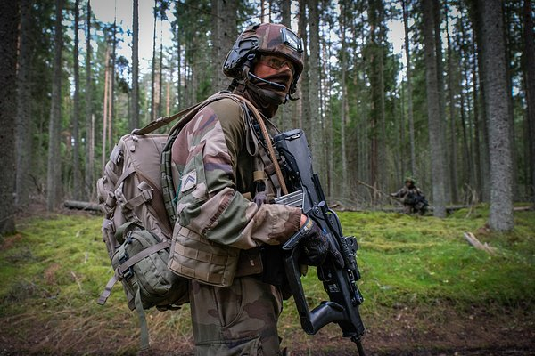

Генштаб ВСУ заявил об отправке резервов на Харьковщину
Франция отправила на Украину бойцов Иностранного легиона (фр. Légion étrangère), регулярного подразделения своих сухопутных войск, которое комплектуется преимущественно из иностранцев. По крайней мере, про это пишут российские военкоры, а также близкий к Министерству обороны США военный эксперт Стивен Брайен. Ни во Франции, ни на Украине пока официально не подтверждали и не опровергали эту информацию, однако Министерство обороны России уже объявило о подготовке к первым со времен СССР учениям с использованием тактического ядерного оружия «в ответ на угрозы и провокации». Что такое французский Иностранный легион, почему появилась информация о его переброске на Украину, чем он может там заняться и каковы будут последствия такого вмешательства